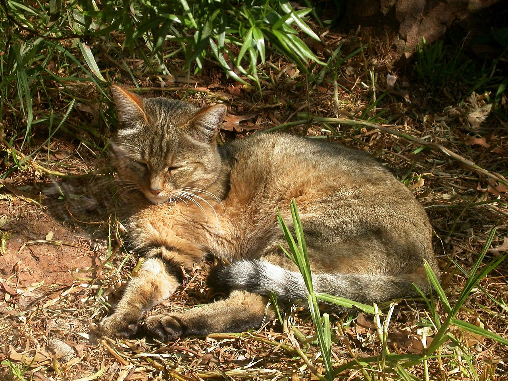

О себе
Меня зовут Степа, я родился в городе Самара. Я учился в лицее "Престиж". Раньше занимался футболом брейк-дансом, а сейчас мне нравится программирование и администрирование. В свободное время я люблю с друзьями сидеть в дискорде и разговарить с ними обо всем.
Какие фильмы мне нравятся
- Интерстеллар
- Терминатор
- Начало
Какая музыка мне нравится
- Phonk revival
- Инди
- Experimental hip-hop
Как связаться со мной
Вы можете найти меня в ВКонтакте.
